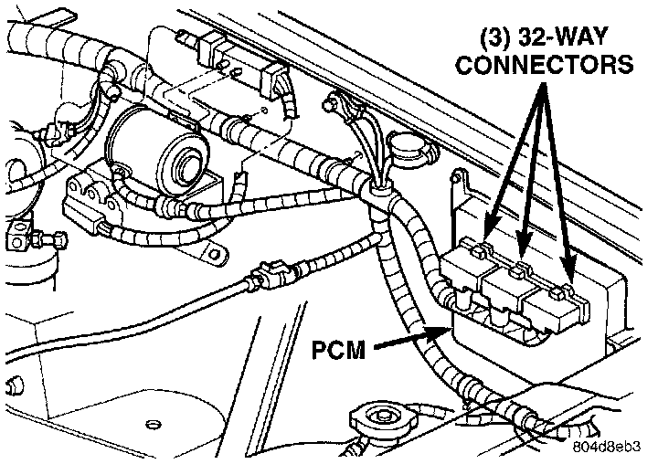
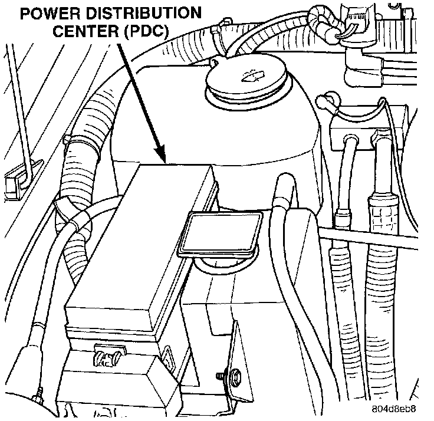
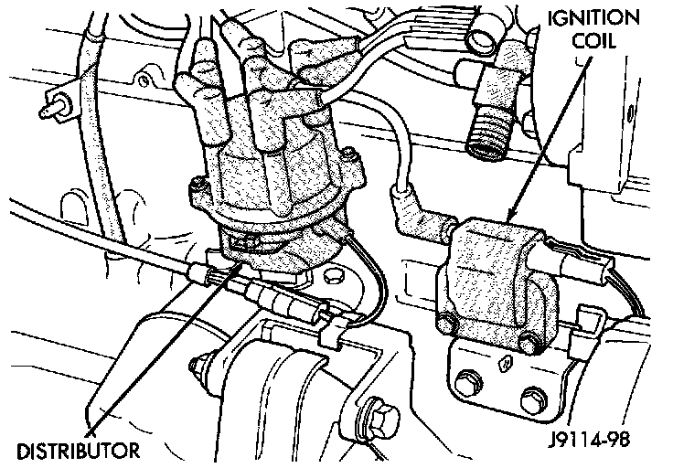
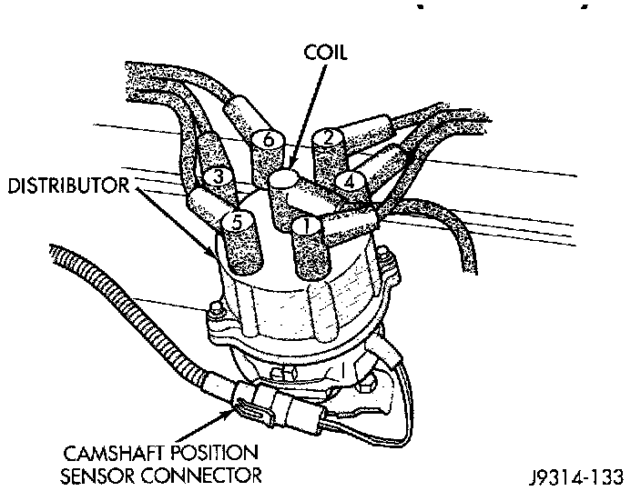
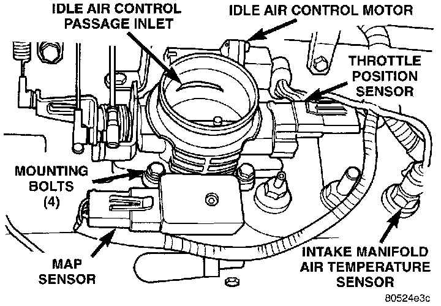
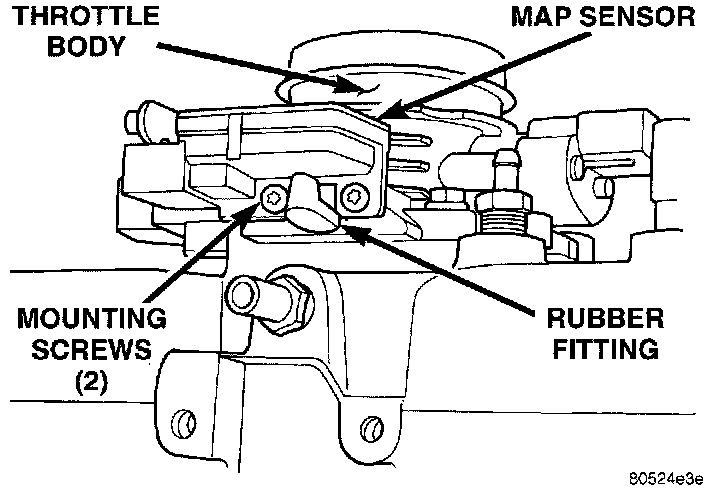
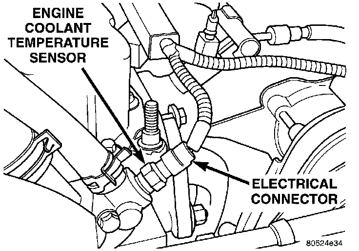
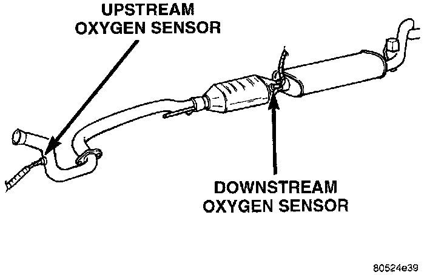
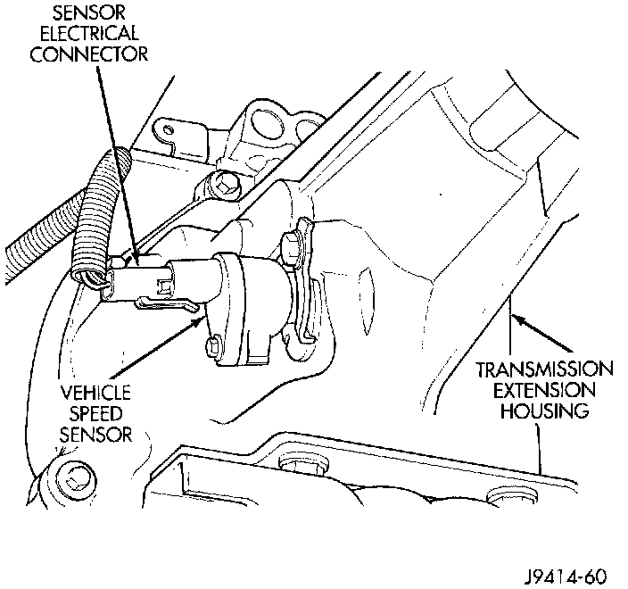

Visual Component Inspection
VISUAL INSPECTIONA visual inspection for loose. disconnected or incorrectly routed wires and hoses should be made. This should be done before attempting to diagnose or service the fuel injection system. A visual check will help spot these faults and save unnecessary test and diagnostic time. A thorough visual inspection will include the following checks:
Fig 15 Powertrain Control Module (PCM):

1 Verify that the three 32-way electrical connectors are fully inserted into the connector of the powertrain control module (PCM) (Fig. 15).
2 Inspect the battery cable connections. Be sure that they are clean and tight.
Fig 16 Power Distribution Center (PDC):

3 Inspect fuel pump relay and air conditioning compressor clutch relay (if equipped). Inspect the ASD relay connections. Inspect starter motor relay connections. Inspect relays for signs of physical damage and corrosion. The relays are located in the Power Distribution Center (PDC) (Fig. 16). Refer to label on PDC cover for relay location.
Fig. 17 Ignition Coil:

4 Inspect ignition coil connections. Verify that the coil secondary cable is firmly connected to the coil (Fig. 17).
Fig 18 Distributor And Wiring:

5 Verify that distributor cap is correctly attached to distributor. Be sure that spark plug cables are firmly connected to the distributor cap and the spark plugs are in their correct firing order (Fig. 18). Be sure that coil cable is firmly connected to distributor cap and coil. Be sure that camshaft position sensor wire connector (at the distributor) is firmly connected to harness connector. Inspect spark plug condition. Connect vehicle to an oscilloscope and inspect spark events for fouled or damaged spark plugs or cables.
6 Verify that generator output wire, generator connector and ground wire are firmly connected to the generator.
7 Inspect the system body grounds for loose or dirty connections. Refer to Wiring for ground locations.
8 Verify crankcase ventilation (CCV) operation. Refer to Emission Control Systems for additional information.
9 Inspect fuel tube quick-connect fitting-to-fuel rail connections.
10 Verify that hose connections to all ports of vacuum fittings on intake manifold are tight and not leaking.
11 Inspect accelerator cable, transmission throttle cable (if equipped) and cruise control cable connections (if equipped). Check their connections to the throttle arm of throttle body for any binding or restrictions.
12 If equipped with vacuum brake booster, verify that vacuum booster hose is firmly connected to fitting on intake manifold. Also check connection to brake vacuum booster
13 Inspect the air cleaner inlet and air cleaner element for dirt or restrictions.
14 Inspect radiator grille area, radiator fins and air conditioning condenser for restrictions.
Fig 19 Sensor Location:

15 Verify that the intake manifold air temperature sensor wire connector is firmly connected to harness connector (Fig. 19).
Fig 20 Rubber L-Shaped Fitting-Map Sensor-to-Throttle Body:

16 Verify that MAP sensor electrical connector is firmly connected to MAP sensor (Fig. 19). Also verify that rubber L-shaped fitting from MAP sensor to the throttle body is firmly connected (Fig. 20).
17 Verify that fuel injector wire harness connectors are firmly connected to injectors in the correct order. Each harness connector is numerically tagged with the injector number (INJ 1, INJ 2 etc.) of its corresponding fuel injector and cylinder number.
18 Verify harness connectors are firmly connected to idle air control(IAC) motor and throttle position sensor (TPS) (Fig. 19).
Fig 21 Engine Coolant Temp. Sensor:

19 Verify that wire harness connector is firmly connected to the engine coolant temperature sensor (Fig. 21).
20 Raise and support the vehicle.
Fig 22 Location Of Oxygen Sensors:

21 Verify that both of the oxygen sensor wire connectors are firmly connected to the sensors. Inspect sensors and connectors for damage (Fig. 22).
22 Inspect for pinched or leaking fuel tubes. Inspect for pinched, cracked or leaking fuel hoses.
23 Inspect for exhaust system restrictions such as pinched exhaust pipes, collapsed muffler or plugged catalytic convertor.
24 If equipped with automatic transmission, verify that electrical harness is firmly connected to park/neutral switch.
Fig 23 Vehicle Speed Sensor-Typical:

25 Verify that the electrical harness connector is firmly connected to the vehicle speed sensor (Fig. 23).
26 Verify that fuel pump/gauge sender unit wire connector is firmly connected to harness connector.
27 Inspect fuel hoses at fuel pump/gauge sender unit for cracks or leaks.
28 Inspect transmission torque convertor housing (automatic transmission) or clutch housing (manual transmission) for damage to timing ring on drive plate/flywheel.
29 Verify that battery cable and solenoid feed wire connections to the starter solenoid are tight and clean. Inspect for chaffed wires or wires rubbing up against other components.